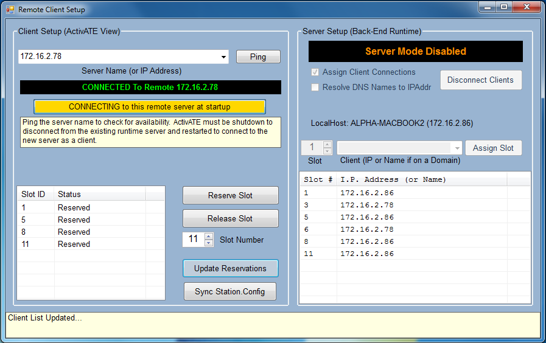
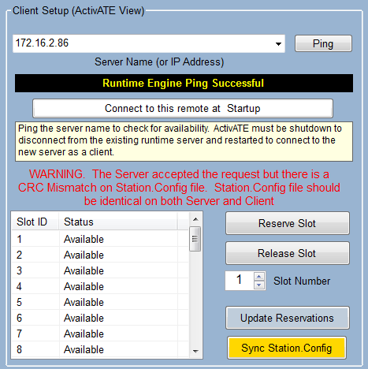
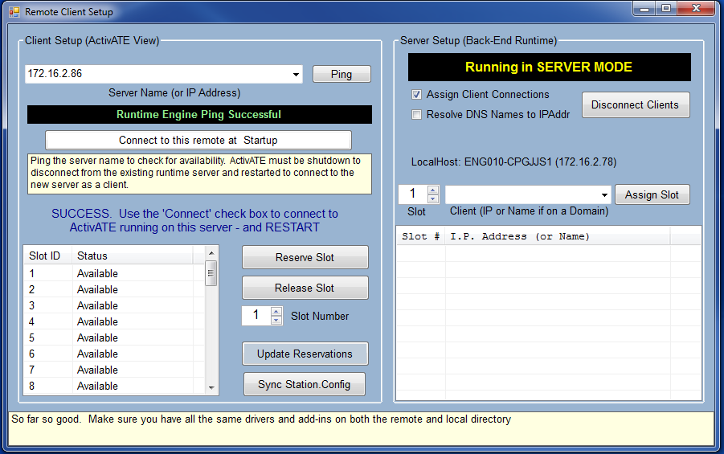

A user can act as a client and connects to one central server.

The server setup side for a client is not accessable.
The client setup side of this page allows for clients to specify which server they connect to. To do this, a user must do the following steps:
1. Specify Server Name or IP Address and ping this computer.
2. The following image will be shown if the two computer's Station.Config files aren't consistent. Click the "Sync Station.Config" button to synchronize the user's file with the server's file. Then click on "Click to connect to this remote server at startup".

3. The user will then see the following and image and must restart ActivATE for the connection to be set up.

The user specifies the slot number that is reserved or released based on the value in the slot number box.
If changes in reservations in slots aren't being displayed to the user, the user should click on the "Update Reservations" button to update the displayed reservations.
Main Toolbar Remote Client Setup Server Side Running Tests Disconnecting
Astronics Test Systems
Last updated on 1/14/15 M. Buccat